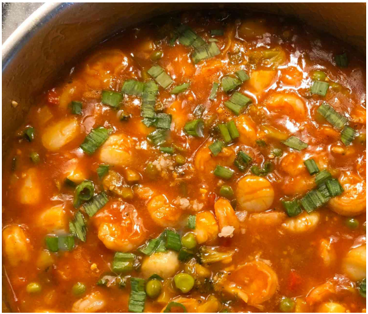

Szechuan shrimp is an impressive dish made with
simple ingredients. I usually make it for company.
For more or less heat, adjust the amount of red pepper.
Serve over hot steamed rice.
Ingredients
- 4 tablespoons water
- 2 tablespoons ketchup
- 1 tablespoon soy sauce
- 2 teaspoons cornstarch
- 1 teaspoon honey
- ½ teaspoon crushed red pepper
- ¼ teaspoon ground ginger
- 1 tablespoon vegetable oil
- ¼ cup sliced green onions
- 4 cloves garlic, minced
- 12 ounces cooked shrimp, tails removed
Instructions
- Stir together water, ketchup, soy sauce, cornstarch, honey, crushed red pepper, and ground ginger in a small bowl until combined. Set aside.
- Heat oil in a large skillet over medium-high heat. Cook and stir green onions and garlic in hot oil until fragrant, about 30 seconds. Stir in cooked shrimp; toss to coat with oil. Pour in ketchup mixture. Cook and stir until sauce is bubbly and thickened.
Home